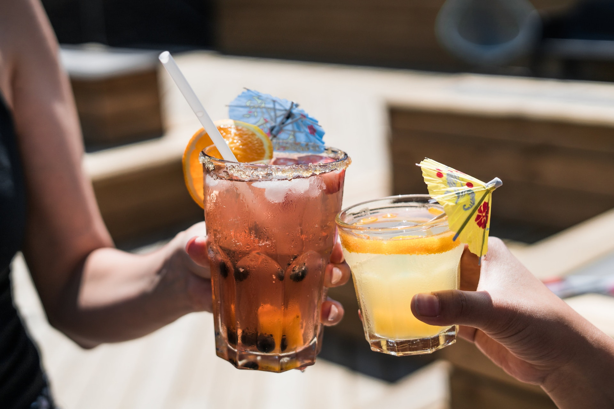
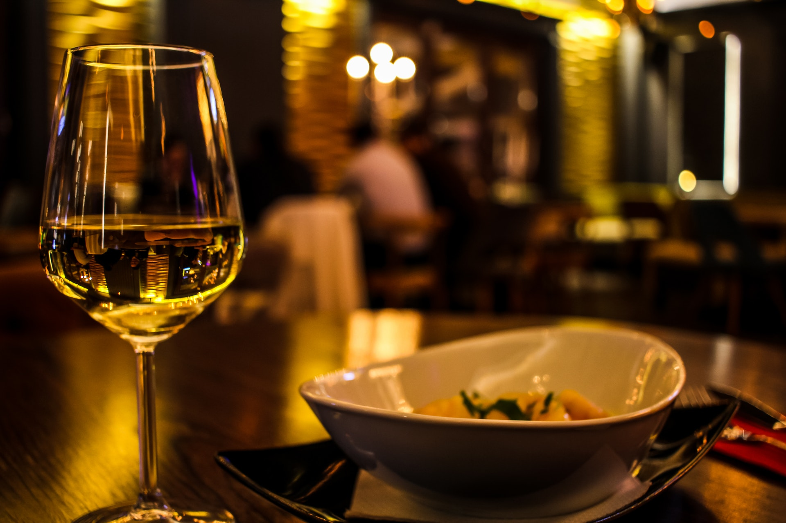

Menu

Dinner

Drinks

"FoodyResto specializes in the freshest fish and seafood prepared with "Latino – Caribbean flair, and features a wonderful oyster and ceviche bar in front of the open kitchen. In 2003, Aguaviva was named one of the 75 best new restaurants in the world by Conde Nast Traveler magazine. A variety of ceviches are offered, served with tostones of course, as well as several types of oysters, which are flown in daily, as are the fresh Maine lobsters. The atmosphere at Aguaviva is hip and refreshing, designed to feel as if you were dining by the sea with its glowing blue and white décor."